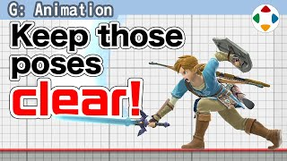
速览
很多游戏都有攻击动作，樱井的作品中这样划分：待机、预备、攻击、收招。逐一看。待机：一切的原点姿势，几乎所有动作都从地面待机和空中待机做出来，所以先做扎实、不动摇是不可或缺的。预备：也叫预备动作或蓄力，是攻击开始的姿势、挥起的动作。他的作品常在第 1 帧就意外地大幅移动（姿势跳跃）；普通从待机到预备姿势要花时间平滑过渡，但瞬间大跳姿势是为了立即显示接受了输入，对对手而言也能促使立即回避。攻击：攻击的核心姿势，即攻击判定发生的瞬间或其前后的动作。命中时多会加入叫「顿帧（hit stop）」的停顿，所以攻击判定出现的瞬间、实际撞到对手的瞬间要让姿势利落地定格——这里不行就可以说全都不行。收招：也叫后摇，攻击判定结束、进入硬直并返回待机姿势的时间。对玩家是不可操作的状态，所以避免保持在接近待机姿势的样子，要演出到用满时间。另外收招中设置取消帧：在完全回到待机前就能操作，可以移动、跳跃、攻击等；《大乱斗 DX》之前没有这机制，要完全回到待机才能操作，操作感有点重、局促。委托做动作时，会明示四点：待机姿势、攻击姿势、攻击发生帧、总帧数（即到取消为止的时间）。待机与攻击之间是预备，攻击与总帧数之间是收招，所以这些决定了，动作设计师就容易想象多了——当然实际上也有很多直接指示。
1. 四个阶段 0:02
很多游戏都有攻击动作。樱井的作品中这样划分：待机、预备、攻击、收招。
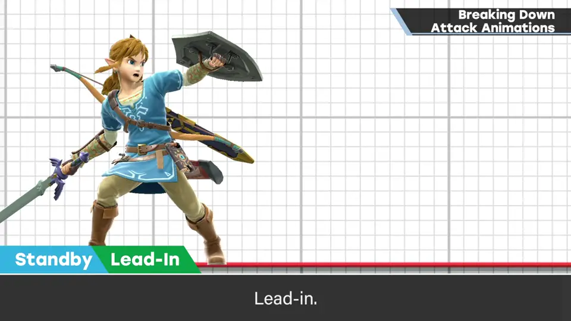
2. 待机 0:27
待机是一切的原点姿势。几乎所有动作都从地面待机和空中待机做出来。
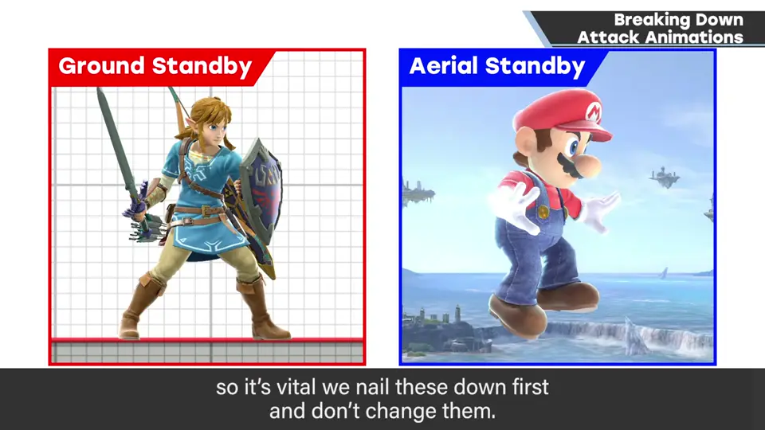
3. 预备 0:44
也叫预备动作或蓄力，是攻击开始的姿势、挥起的动作。
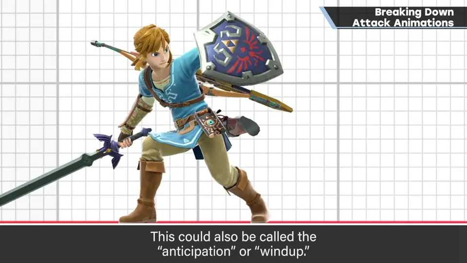
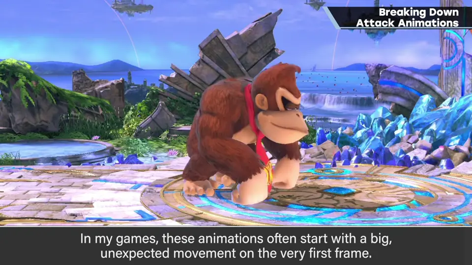
对对手来说，这也能促使他们立即采取回避行动。
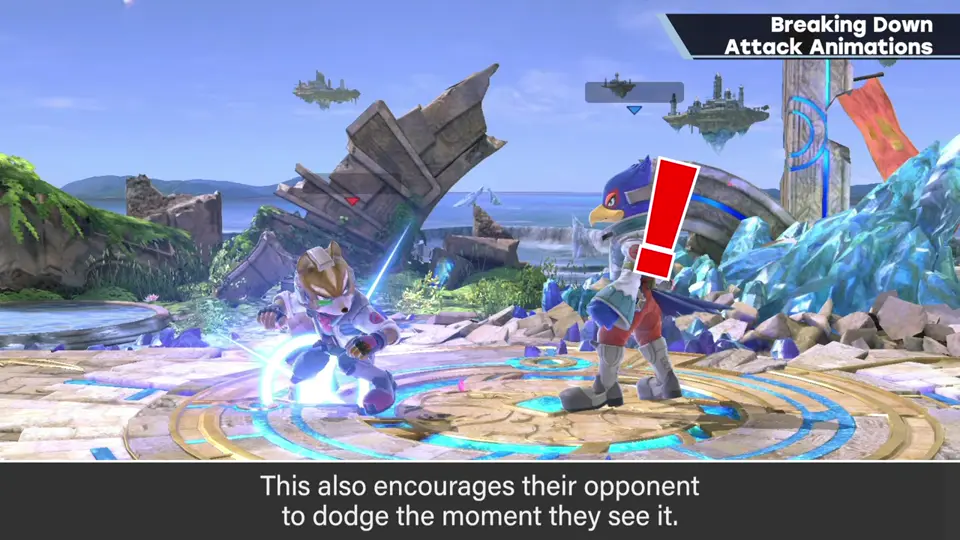
4. 攻击 1:19
攻击的核心姿势：攻击判定发生的瞬间，或其前后的动作。
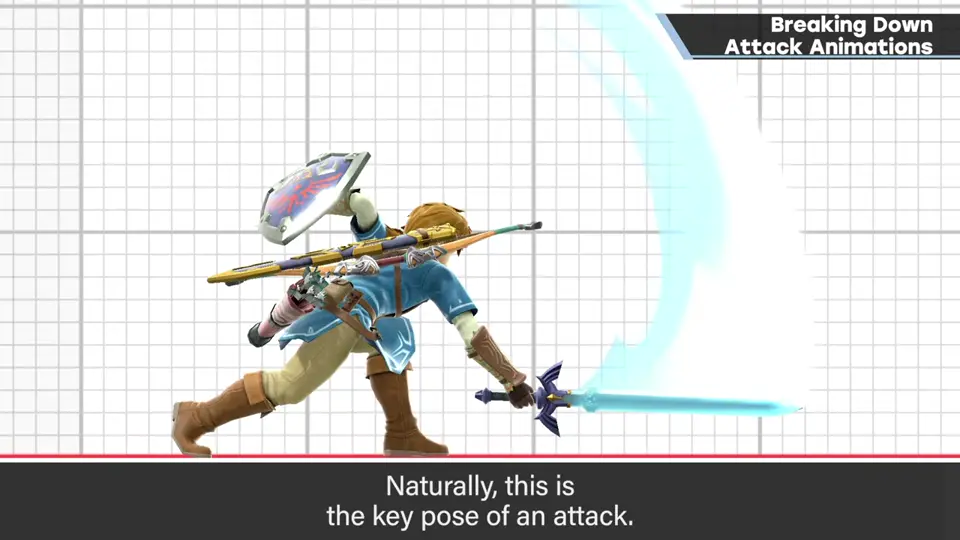
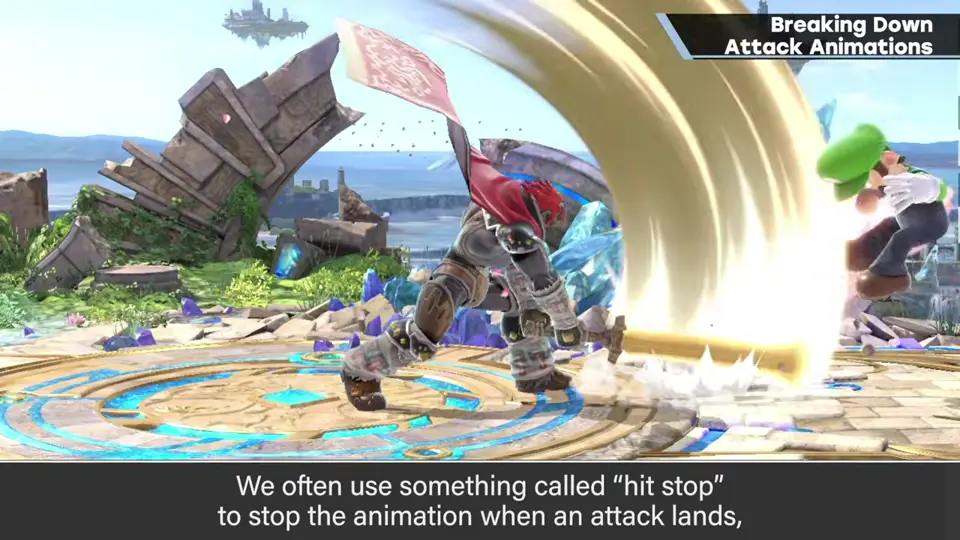
命中时多会加入叫「顿帧」的停顿。所以攻击判定出现的瞬间、实际撞到对手的瞬间，要让姿势利落地定格。
5. 收招 1:44
也叫后摇：攻击判定结束、进入硬直并返回待机姿势的时间。
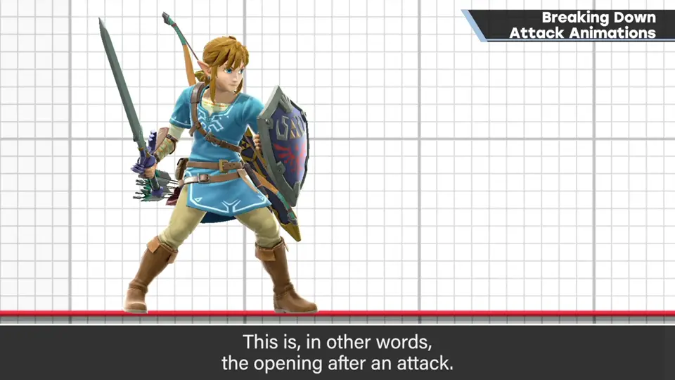
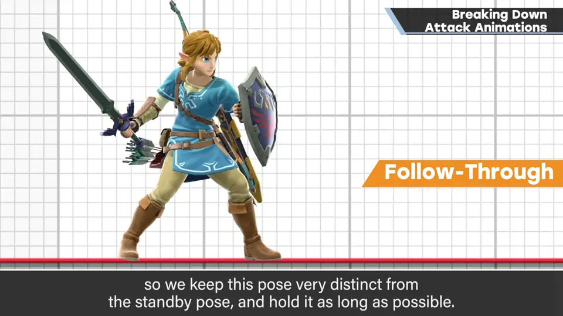
对玩家而言这是不能操作的状态，所以避免一直保持在接近待机的姿势，要演出到用满时间。
6. 取消帧 2:08
另外，收招中要设置取消帧：在完全回到待机姿势之前就能操作，可以移动、跳跃、攻击等。
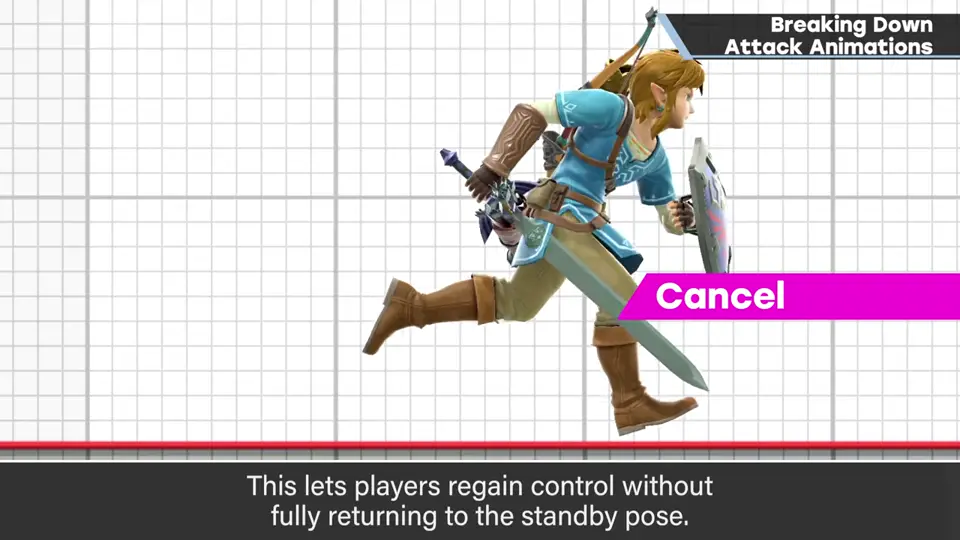
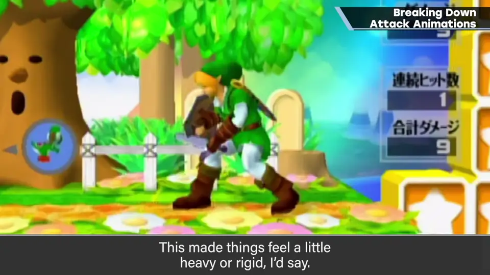
《大乱斗 DX》之前没有这个机制，要完全回到待机姿势才能操作，操作感有点重、局促。
7. 委托时明示四点 2:40
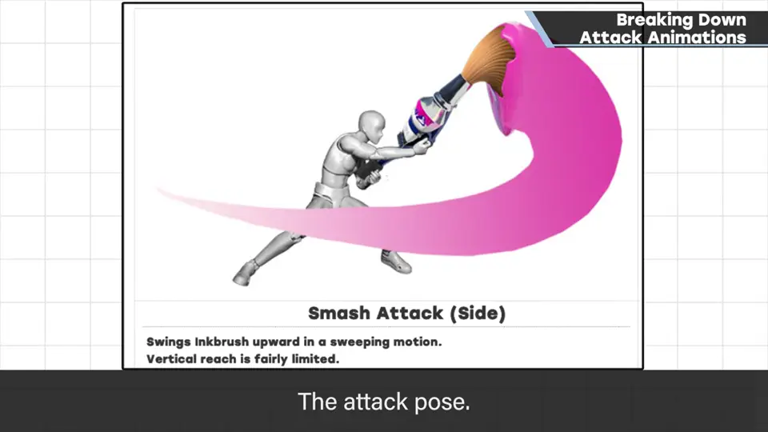
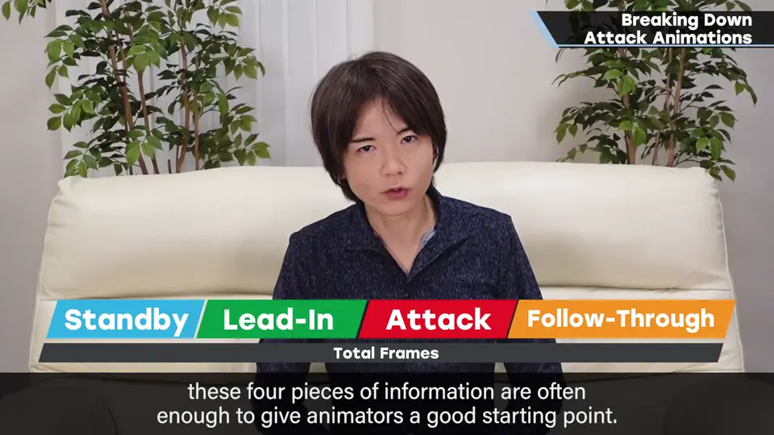
待机与攻击之间是预备，攻击与总帧数之间是收招。所以这些决定了，动作设计师就容易想象多了——当然实际上也有很多直接指示。
自测题
1. 攻击动作分为哪四段？
待机、预备、攻击、收招。 0:10
2. 为什么预备动作要在第 1 帧大幅变化？
立即显示输入被接受，也促使对手立即回避。 0:55
3. 委托动作时明示的四点是什么？
待机姿势、攻击姿势、攻击发生帧、总帧数（到取消为止）。 2:45